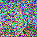
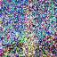
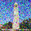
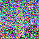
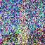
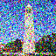

Part 0
Prompt exploration
- Seed: 100
- Prompts used:
- “a photorealistic close-up shot of a red apple on a wooden table, natural sunlight”
- “a half-cat half-dragon creature sitting on a neon rooftop at night”
- “a dog whose shape is formed from letters spelling the word 'god'”
- Inference steps tried: 20 (stage 1/2) for all prompts.
- Reflection: The apple prompt produced clean, realistic detail; the cat-dragon prompt matched style and color well; the text-shaped dog prompt was legible and captured the word-form silhouette.


 




